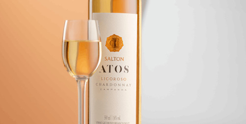

Vinho Licoroso
Difícil de se identificar no Brasil por conta dos chamados “vinhos suaves”, o vinho licoroso é basicamente um vinho doce, e com teor alcoólico relativamente alto para um vinho.
A legislação brasileira define o vinho licoroso como tendo um teor alcoólico entre 14 e 18%, podendo ser elaborado com fermentação do mosto de uvas, fermentação a partir de destilado vínico ou até ambos.
Isso o diferencia de um vinho suave pois um vinho doce naturalmente fermentado ou fortificado apresenta teor alcoólico elevado. É importante lembrar que essa definição não reflete o país de origem do vinho, onde pode ser considerado um vinho tranquilo ou de outro estilo.

Curiosidades:
- Os antigos romanos adicionavam mel durante a fermentação do vinho, para adocicá-lo e deixá-lo mais forte, técnica hoje amplamente utilizada em todo mundo, muitas vezes com açúcar no lugar do mel.
- Estilo icônico de Portugal, o Vinho do Porto é um vinho licoroso de alto teor alcóolico, dulçor e caráter rico, com aromas potentes e sabor intenso. Embora seja muito conhecido como um vinho tinto, é produzido nas versões seco, meioseco e branco.
- Os vinhos licorosos são definidos por seu perfil adocicado, mesmo os considerados secos, e um teor alcóolico elevado, permitindo maior longevidade. Devido ao dulçor são muito apreciados como vinhos de sobremesa ou aperitivos, auxiliando na digestão e consumidos antes, durante ou após refeições.
- São em sua maioria envelhecidos em madeira, adquirindo característicos aromas de caramelo, toffee, baunilha e coco. Os que não são envelhecidos tendem a trazer no aroma notas de mel, mel de flor, compota de fruta e até criticidade.